Un lugar super recomendable. Al lado de la playa. Todo riquísimo. Pedimos paella mixta y estaba muy buena y a buen precio. El trato del personal excelente, la música de fondo… en fin. Un lujo.
↓ Desplázate para ver la carta completa
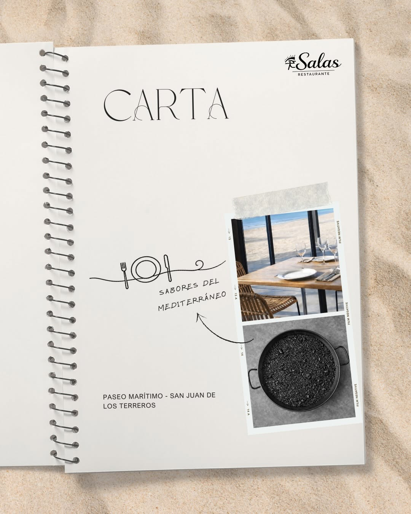
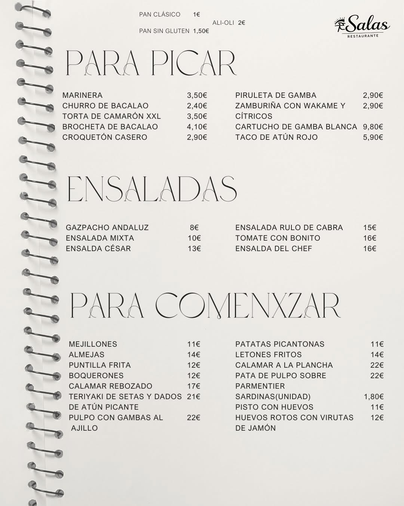
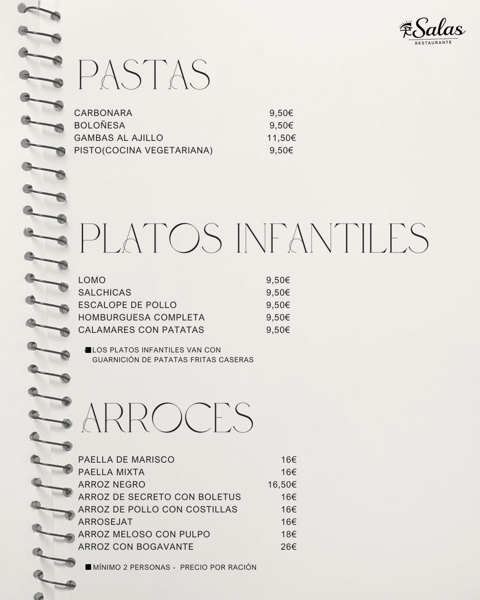
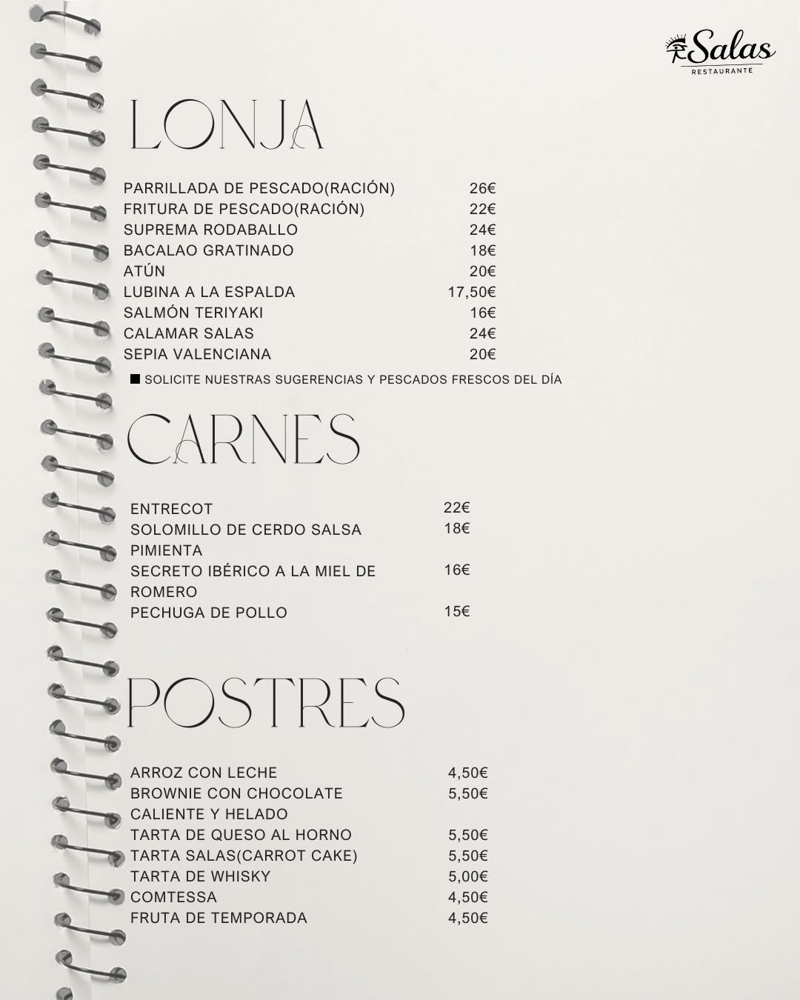
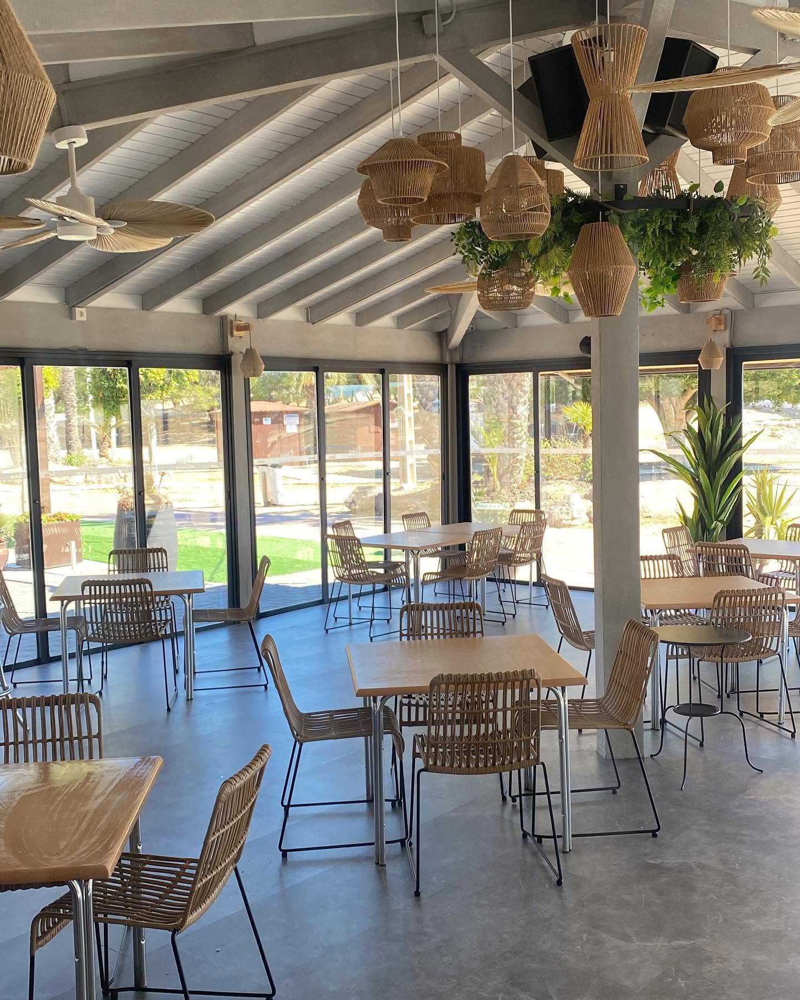
Arroces, pescado fresco y coctelería con vistas al mar
Bienvenido a Chiringuito Salas, un clásico en primera línea de playa de San Juan de los Terreros, Almería, desde 1994. Nuestra terraza frente al mar respira el espíritu despreocupado del Mediterráneo, con el castillo de Terreros y el Pichirichi como telón de fondo. Ven a comer sin prisas — arroces de cuchara, pescado del día, ensaladas frescas y buena coctelería, todo con las mejores vistas de la costa.
Todo comenzó con Francisco Salas, que transformó un modesto puesto de helados en la playa Mar Rabiosa en el chiringuito que ves hoy. Junto al castillo de Terreros y el Pichirichi como telón de fondo, aquí el tiempo siempre ha pasado más despacio.
Producto local, producto fresco. Desde las gambas recién descargadas hasta el aceite de OleoAlmanzora. Sabores que no se improvisan — se heredan.
Francisco SalasFundador
El sabor del Mediterráneo, sin atajos. En Chiringuito Salas seleccionamos cada día lo mejor de la lonja y de la huerta almeriense: pescado y marisco fresco, gambas recién descargadas y verduras de temporada, todo a la vista en nuestra vitrina.
De ahí nacen nuestros platos estrella — desde el arroz negro con sepia y la pata de pulpo a la plancha, hasta la fritura Salas del día. Producto fresco, cocina honesta y el Mediterráneo siempre de fondo.
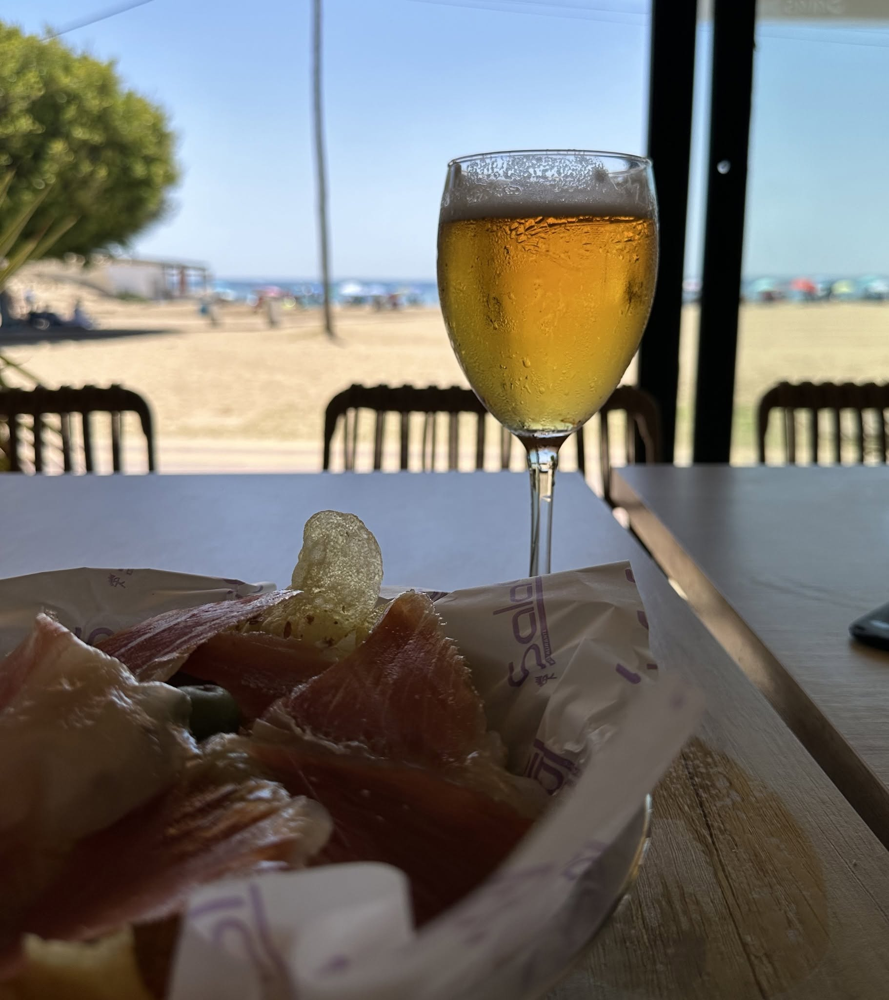
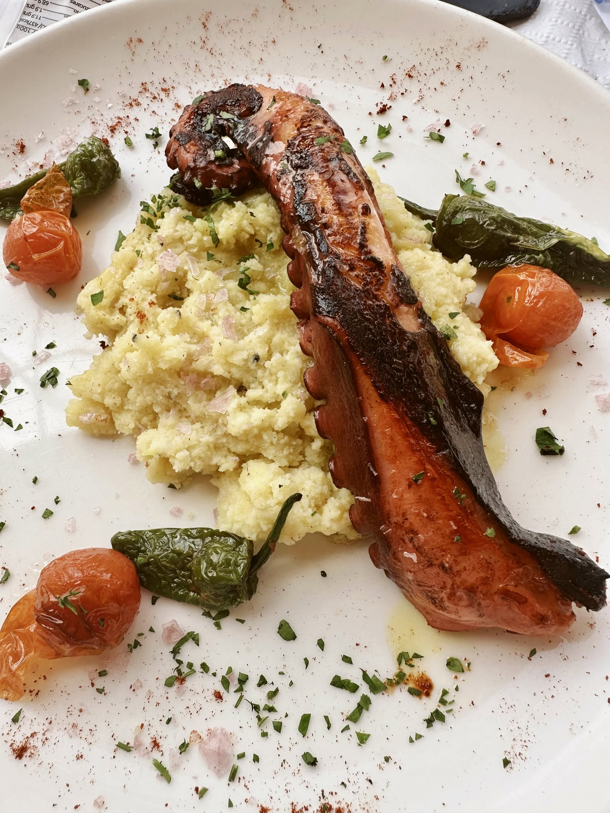
Pata de pulpo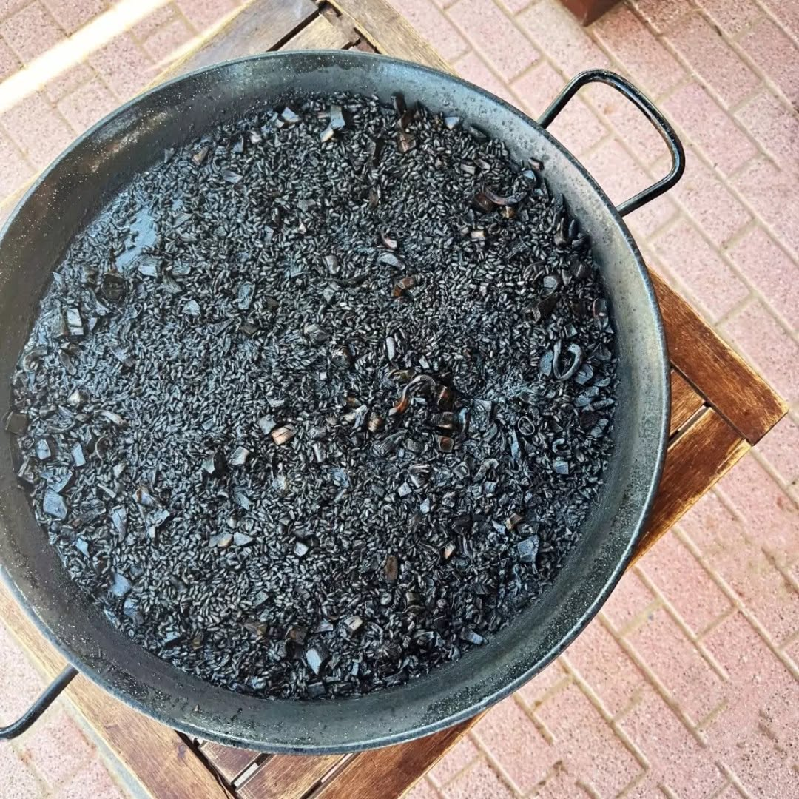
Arroz negro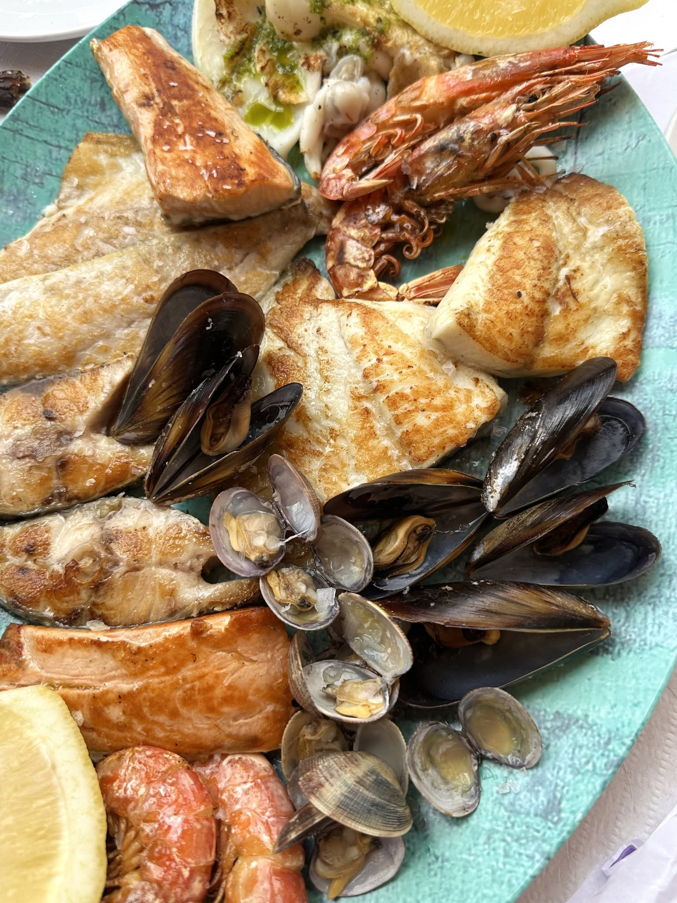
Fritura Salas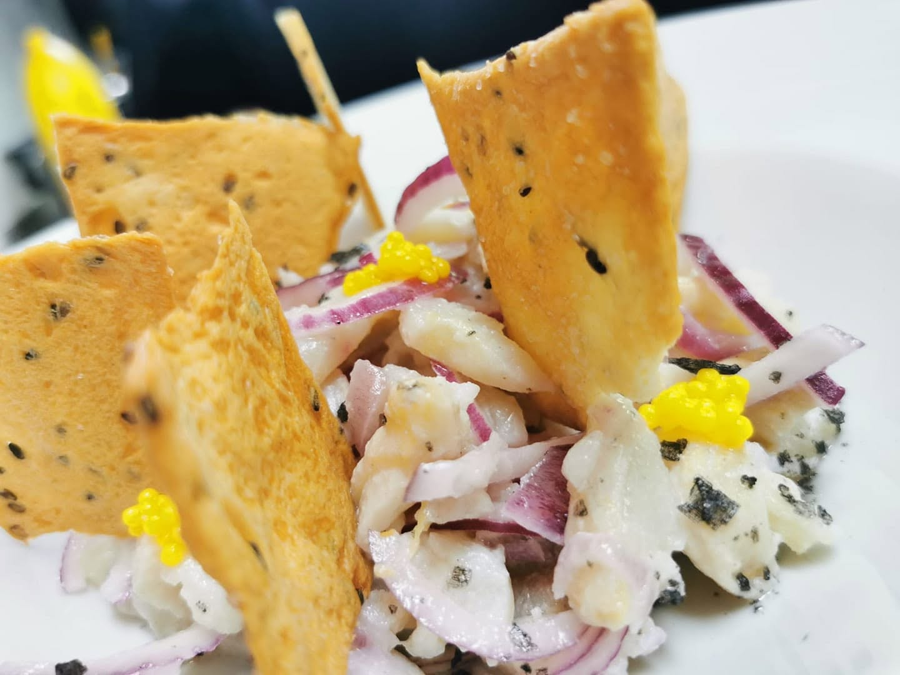
Ceviche de corvina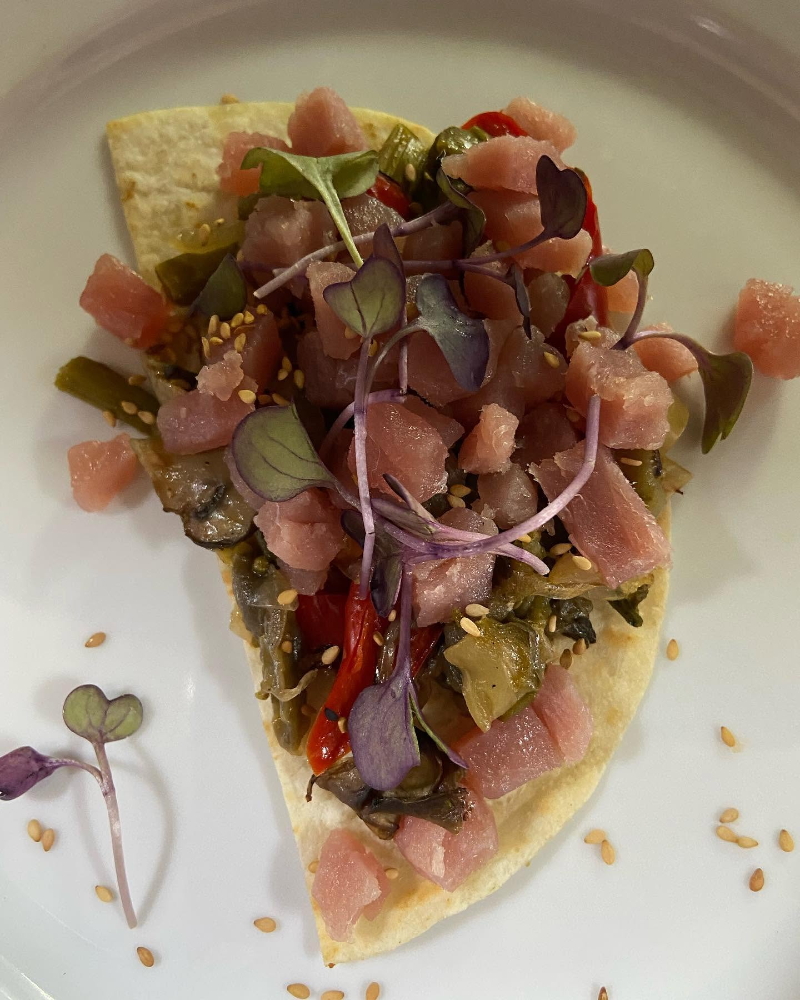
Taco de atúnTerraza frente al Mediterráneo con el castillo de Terreros y el Pichirichi de fondo. De día, mesas a pie de arena y sombra de cañizo; al caer el sol, luces cálidas, buena música y coctelería para alargar la noche.
Un espacio pensado para comer sin prisa, tomar algo con los pies casi en la arena y quedarte a ver el atardecer.
Reservar mesaUn lugar super recomendable. Al lado de la playa. Todo riquísimo. Pedimos paella mixta y estaba muy buena y a buen precio. El trato del personal excelente, la música de fondo… en fin. Un lujo.
Local muy recomendable con una terraza con vistas directas al Mar Mediterráneo. Amplia carta y servicio responsable. Plato recomendado: ¡el arroz meloso de pulpo es espectacular!
Lugar frente al mar fantástico. La comida está bastante bien. Servicio bastante bueno y el personal muy simpático y amable. Lo recomendaría sin dudarlo a cualquiera que pase por Terreros.
Estamos en primera línea de playa en el Paseo Marítimo de San Juan de los Terreros. Reserva por teléfono o simplemente preséntate — siempre encontramos un hueco.